Je viens de créer toute cette application mobile avec l'IA en quelques minutes et je pourrais même faire payer pour cela et j'ai ajouté des abonnements payants à mon application. Dans cette vidéo, je vais vous montrer non seulement comment créer une application mobile avec l'IA, mais je vais vous montrer comment vous pourriez commencer à gagner de l'argent avec en 2026 en seulement quelques étapes simples. Alors sans plus attendre, plongeons directement dans cette vidéo. Très bien les gars, voici donc l'interface de Rourke, c'est ici que nous allons créer notre application mobile, c'est un outil de programmation intuitive spécifique aux applications mobile. Donc ce que je vais faire, c'est que je vais coller mon prompt pour mon application ici, c'est un prompt très spécifique, j'ai en fait utilisé ChatGPT pour m'aider à le concevoir. Et il détaille tout, de la conception aux fonctionnalités principales.
Interface & Outils : Navigateur web affichant la plateforme Rork (rork.com)
Contenu textuel & Code : Page d'accueil de Rork avec le slogan 'Build native mobile apps, fast.' et un champ de saisie de prompt utilisant Claude 3.5.
Action / Démonstration : Navigation et présentation de la plateforme de création d'applications mobiles par IA Rork.
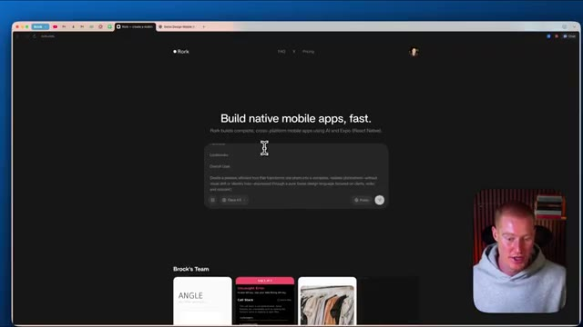
🔍 AgrandirSi vous voulez ce prompt pour recréer cette application, il y aura un lien dans la description pour le faire. Et une chose que je veux mentionner ici, c'est que nous avons la possibilité de sélectionner n'importe quel grand modèle de langage que nous voulons utiliser pour réellement construire notre application. Et je vais personnellement cliquer sur Gemini 3 Pro pour concevoir notre application, car j'ai remarqué que Gemini 3 crée les meilleures conceptions en matière de programmation intuitive. Et ensuite, à partir de là, je vais passer à Opus 4.5, qui est le meilleur modèle d'Anthropic pour les tâches de raisonnement. Très bien, voici donc notre résultat. Nous avons maintenant notre application sur le côté droit. Je pourrais même la tester sur mon téléphone avec ce code QR, ce que je vais vous montrer exactement.
Interface & Outils : Interface web Rork (rork.com) dédiée à la création d'applications mobiles natives par IA.
Contenu textuel & Code : Liste des modèles de langage disponibles incluant Sonnet 4.5, Opus 4.5, GPT-5.2 et Gemini 3 Pro.
Action / Démonstration : Sélection et démonstration du choix du modèle de langage pour la génération de l'application mobile.
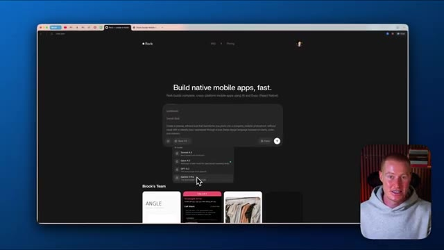
🔍 Agrandir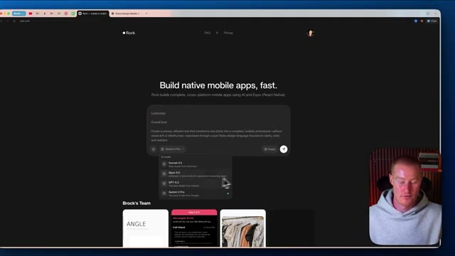
🔍 Agrandircomment le faire et à quoi ça ressemble. Mais je veux souligner ceci sur le côté gauche. Donc, si vous regardez notre chat, vous pouvez voir que Rourke a réellement généré ces images. Il a donc généré notre logo et il a généré cette image de séance photo virtuelle ici. Je suppose qu'il utilise probablement Nano Banana Pro pour faire cela, mais c'est tellement cool. Très bien, alors utilisons maintenant mon téléphone ici et testons réellement notre application pour voir à quoi elle ressemblera sur un téléphone mobile. Donc ce que je vais faire, c'est que je vais ouvrir ma caméra ici. Je vais ensuite scanner ce code QR et j'ai besoin d'avoir l'application Expo Go, que vous pouvez télécharger. Comme vous pouvez le voir, je peux ouvrir ceci ici. Et ce
Interface & Outils : Interface web de développement (Bolt / outil de génération d'application) et simulation d'interface mobile.
Contenu textuel & Code : Code source, panneau de chat IA, logo généré, aperçu d'application mobile "Virtual Photoshoot" et code QR de test.
Action / Démonstration : Le présentateur commente le code et les images générées automatiquement par l'IA (le chat) affichées à l'écran.
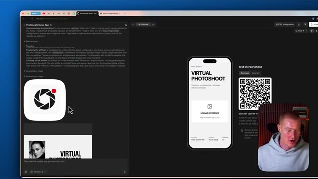
🔍 Agrandirva maintenant nous emmener vers l'application de séance photo virtuelle que j'ai construite directement à l'intérieur de Rourke. Elle a ce design de style suisse. Je trouve que ça a vraiment l'air bien, vraiment propre. Je peux donc maintenant télécharger une référence. Laissez-moi donc aller de l'avant et sélectionner une image ici. J'ai donc cette image de cette dame provenant d'une séance photo et ensuite je peux sélectionner n'importe lequel de ces différents angles que je veux pour cette séance photo par IA si vous voulez l'appeler ainsi. Je vais donc cliquer sur ceux-ci juste ici. Faisons 45 degrés à gauche, 45 degrés à droite, profil latéral, angle en plongée, angle en contre-plongée, et nous n'avons pas besoin de faire de face parce qu'elle montre déjà un angle de face. Je vais donc simplement cliquer sur générer la séance photo.
Interface & Outils : Application mobile de séance photo virtuelle (Rourke Studio).
Contenu textuel & Code : Interface utilisateur avec le titre 'VIRTUAL PHOTOSHOOT', un bouton 'UPLOAD REFERENCE' et des paramètres de configuration en bas.
Action / Démonstration : Présentation de l'application de création de séances photo par IA et préparation au téléchargement d'une image de référence.
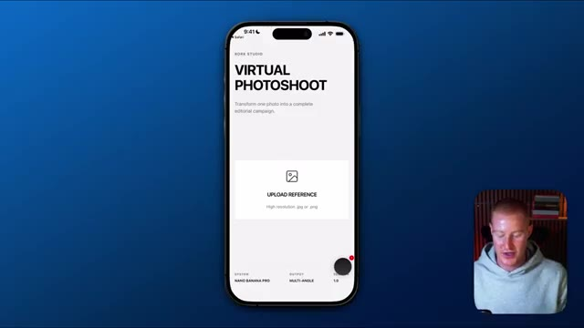
🔍 AgrandirIl commence maintenant à rendre et à générer ceux-ci en utilisant Nano Banana Pro. Je suis curieux de voir à quel point le résultat est bon. Très bien, alors c'est parti. Voici notre résultat initial. On dirait qu'il n'a pas compris en quelque sorte la dynamique de la façon dont nous voulions que ces angles soient, vous pouvez voir que l'angle gauche ne montre pas depuis l'angle gauche, l'angle droit montre bien depuis l'angle droit, euh le profil latéral a l'air vraiment bien, c'est solide, et l'angle haut montre un angle bas, donc nous pouvons aller de l'avant et juste corriger cela dans nos instructions à l'intérieur de work, alors laissez-moi aller de l'avant et faire cela maintenant, et ensuite une fois que nous aurons réglé cela, je vais vous montrer comment nous pourrions maintenant ajouter des paiements à notre application afin que nous puissions commencer à facturer pour une application comme celle-ci. Très bien, alors en revenant à work en ce moment, laissez-moi aller de l'avant et
Interface & Outils : Application mobile de génération d'images affichée sur un écran de smartphone, avec une incrustation vidéo du présentateur.
Contenu textuel & Code : Interface utilisateur mobile montrant un résultat de génération d'image étiqueté "45° Left".
Action / Démonstration : Le présentateur présente et commente le résultat visuel initial généré par l'application mobile.
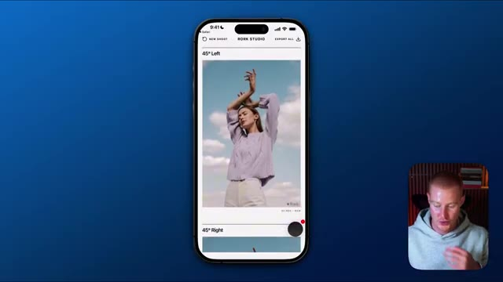
🔍 Agrandirapporter quelques modifications afin qu'il génère réellement les bons résultats et les bons angles pour notre application, et ensuite cela fonctionnera correctement. Je veux que tu t'assures qu'il affiche le bon angle pour chacun des résultats générés de ces images. Donc s'il est écrit 45 degrés à gauche, assure-toi que c'est bel et bien un angle de 45 degrés par la gauche, tout comme s'il est écrit angle en contre-plongée ou angle en plongée, qu'il s'agisse du bon angle. Très bien, alors je vais envoyer ça à Rourke et ça devrait être une correction vraiment simple. Allons voir à quoi ressemble le résultat dans une petite seconde. Très bien, alors une autre fonctionnalité dont je veux parler à l'intérieur de Rourke. Donc nous pourrions soit scanner cela
Interface & Outils : Interface de développement web / éditeur de code d'application mobile et aperçu de simulation d'appareil mobile.
Contenu textuel & Code : Code source, logs de débogage, messages d'erreur, et un QR code de test d'application (« Test on your phone »).
Action / Démonstration : Développement et configuration de l'application, vérification des erreurs et préparation du test sur appareil mobile.
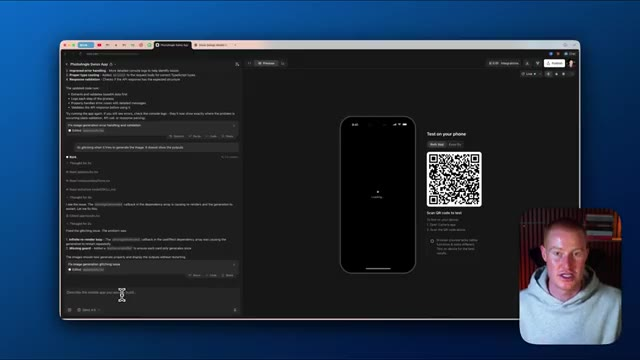
🔍 Agrandircode QR et cela nous mènera vers Expo Go, ou nous pourrions utiliser l'application Rourke elle-même, qui est ce que vous voyez juste ici. Si je clique sur ce bouton noir, cela fera apparaître cette boîte de saisie pour l'IA ici, et je peux aller de l'avant et décrire réellement quels changements je veux apporter, et je pournerais faire du « vibe coding » directement depuis mon téléphone, et c'est l'une des raisons pour lesquelles j'aime tant Rourke. Très bien, alors allons-y pour tester notre application maintenant, donc je vais téléverser cette image de cette dame. Utilisons exactement la même image, et ensuite générons simplement ces quatre angles différents et voyons à quel point ils ont l'air bien. Très bien, et juste comme ça, nous avons l'angle à 45 degrés depuis la droite. Nous avons le profil de côté qui a l'air
Interface & Outils : Application mobile Rourke Studio sur iOS affichée sur fond bleu.
Contenu textuel & Code : Interface utilisateur d'une application mobile avec des blocs de texte, une zone de saisie pour l'IA et des menus de configuration de prise de vue.
Action / Démonstration : Navigation et démonstration des fonctionnalités de l'application mobile Rourke Studio, montrant l'utilisation de l'IA pour modifier l'application.
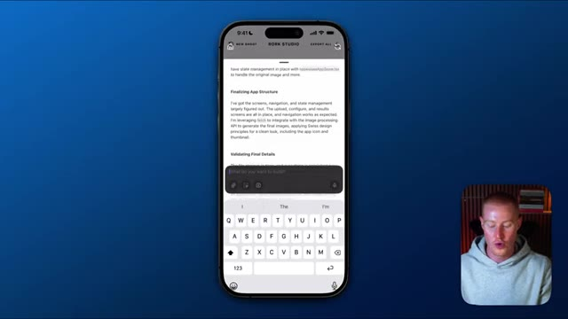
🔍 Agrandir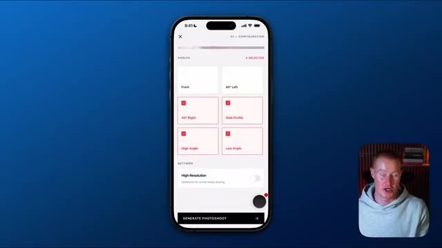
🔍 AgrandirParfait. Nous avons l'angle en plongée et ensuite nous avons l'angle en contre-plongée. Donc notre application génère ces images correctement maintenant. Ce que je veux faire, c'est en fait ajouter un système dorsal, un backend, à notre application. Comme ça, nous pourrions avoir des utilisateurs, nous pourrions stocker chacune de ces différentes séances photo et les utilisateurs peuvent même les télécharger depuis leurs profils. Pour faire cela, tout ce que nous avons à faire est de venir ici en haut à droite de notre écran, de cliquer sur intégrations et de cliquer sur backend. Donc je peux simplement l'activer et cela va maintenant configurer les utilisateurs et les bases de données, les clés API, et tout ce dont nous aurions besoin pour notre application. Très bien. Donc juste comme ça, vous pouvez voir dans notre chat ici que cela a activé tout le backend de notre application. Donc maintenant, allons de l'avant et passons à l'ajout de paiements à
Interface & Outils : Navigateur web affichant un outil de développement d'application no-code/low-code.
Contenu textuel & Code : Menu déroulant des intégrations affichant les options pour le backend, GitHub et RevenueCat.
Action / Démonstration : Navigation dans l'interface de développement pour ajouter un système dorsal (backend) à l'application.
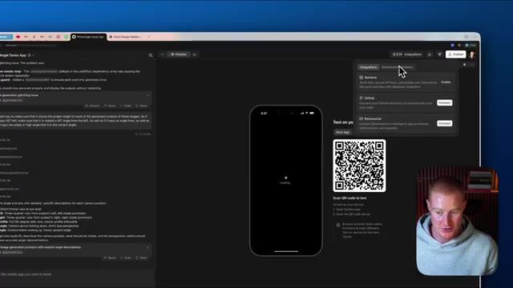
🔍 Agrandirnotre application. Donc nous allons cliquer à nouveau sur ce bouton intégrations. Nous allons descendre sur revenue cat ici et nous allons simplement sélectionner connecter. Et si vous n'avez pas encore de profil revenue cat configuré, vous allez tout simplement vous inscrire avec votre email et créer un mot de passe. Et ensuite, vous pouvez voir ici, nous avons juste besoin d'autoriser tout cela afin qu'il puisse réellement apporter des modifications à notre application Rourke. Donc je vais cliquer sur autoriser. Cela va nous ramener sur notre application Rourke ici. Et ensuite, nous allons tout simplement sélectionner projet, qui va être ce projet juste ici. Donc je vais sélectionner projet, cliquer sur ce bouton là, et vous pouvez voir que notre application est maintenant connectée. Nous pouvons ensuite cliquer sur ce lien gérer dans le tableau de bord revenue cat. Vous pouvez voir que
Interface & Outils : Navigateur web, plateforme de développement d'application avec panneau d'intégrations et interface RevenueCat.
Contenu textuel & Code : Demande d'accès et permissions RevenueCat (Projects, Apps, Products, Entitlements, Offerings, Packages) et options d'intégration (Backend, GitHub, RevenueCat).
Action / Démonstration : Connexion et autorisation de l'intégration RevenueCat avec l'application en cours de configuration.
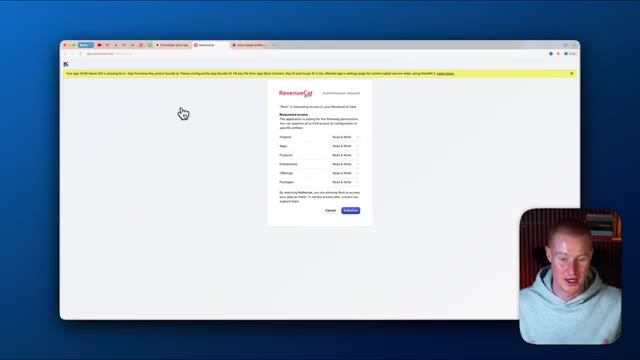
🔍 Agrandir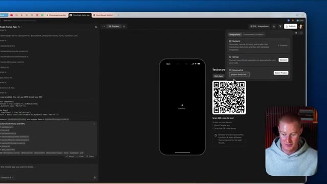
🔍 Agrandirnous avons maintenant les statistiques de notre application et tout ça directement ici. Maintenant, ce que je vais faire, c'est que je vais revenir vers Rourke et lui expliquer fondamentalement ce que nous voulons connecter. Je veux essentiellement m'assurer que les utilisateurs doivent payer pour pouvoir utiliser l'application. Je vais donc simplement expliquer cela à Rourke. Très bien, nous venons donc d'ajouter RevenueCat pour les paiements de notre application. Je veux m'assurer que désormais, si vous voulez utiliser l'application et générer des images, vous devez être un utilisateur payant de notre application. Et je veux que notre application coûte 1 dollar par mois. L'une de mes choses préférées avec Rourke, c'est que vous pouvez voir chacune des tâches au fur et à mesure qu'elles sont exécutées ici même. Vous pouvez voir qu'il vient de cocher celle-ci juste ici. Trois de nos neuf tâches ont maintenant été cochées.
Interface & Outils : Interface de développement web / éditeur de code avec aperçu mobile et QR code.
Contenu textuel & Code : Lignes de code, instructions de backend, et un simulateur d'application mobile avec un QR code pour tester sur téléphone.
Action / Démonstration : Le présentateur montre l'état actuel de l'application et de son interface de développement avant d'expliquer les prochaines étapes d'intégration.
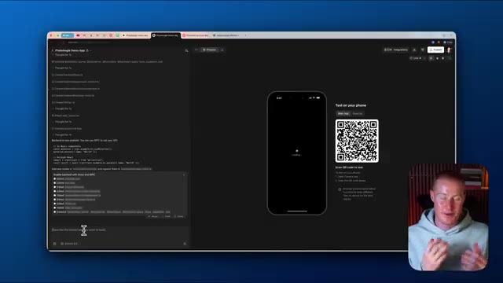
🔍 Agrandiret il va traiter chacun d'eux individuellement. Il va les analyser, trouver la meilleure façon d'aborder ces tâches. Vous pouvez voir ici, il me demande en fait de configurer des variables d'environnement. En tant que non-programmeur, je ne sais même pas ce que cela signifie, mais je vais simplement sélectionner oui, les configurer. Et c'est toute la beauté d'utiliser Rourke pour coder vos applications mobiles au feeling. Très bien. Donc, en quelques étapes seulement, nous avons maintenant notre RevenueCat ajouté. Laissez-moi donc tester cela maintenant à l'intérieur d'Aurora. Je vais télécharger une image sur notre application de séance photo virtuelle et je vais simplement choisir chacun de ces angles ici, tout comme avant. Je vais cliquer sur générer la séance photo et maintenant nous voyons ceci ici. Nous devons passer à la version pro, donc nous pouvons soit passer à la version annuelle, soit nous
Interface & Outils : Interface web de développement mobile (type Bolt/v0), simulateur de smartphone et webcam du présentateur.
Contenu textuel & Code : Configuration des variables d'environnement, journaux d'exécution de l'IA (Thought process) et aperçu d'application React Native/mobile.
Action / Démonstration : Configuration des variables d'environnement et test interactif de l'application mobile générée par l'IA.
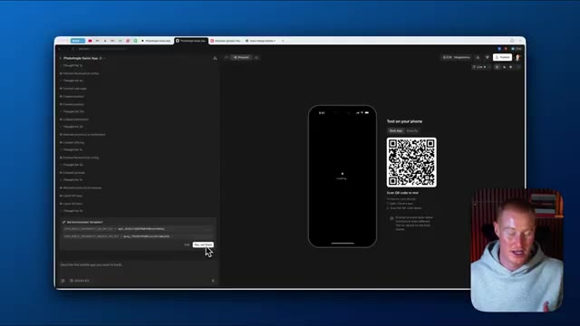
🔍 Agrandir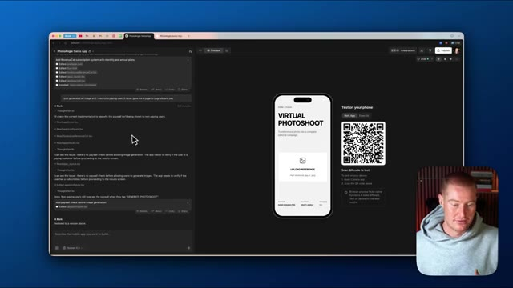
🔍 Agrandir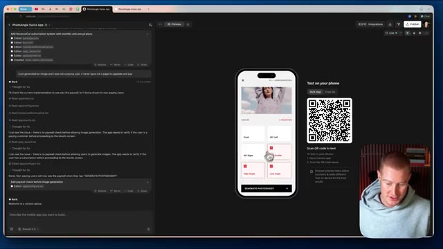
🔍 Agrandirpourrait passer à un abonnement mensuel, donc je vais cliquer sur mensuel et étant donné qu'il s'agit d'un environnement de test dans Revenue Cat et que ce n'est pas un vrai achat que je vais sélectionner, nous devons choisir si nous voulons tester un échec d'achat ou un achat valide. Testons donc un achat valide pour les besoins de cette vidéo. Et c'est aussi simple que ça, nous avons maintenant accès au compte pro. Et ensuite, nous devrions être capables de générer notre séance photo. Jetons un coup d'œil maintenant, mais cela devrait fonctionner de manière 100 % fluide. Boum. Et c'est aussi simple que ça, nous avons cette photo de profil de notre sujet dans cette image. Et nous avons effectivement dû payer pour utiliser notre application. Laissez-moi donc venir
Interface & Outils : Simulateur d'application mobile et interface de test (RevenueCat / environnement de développement).
Contenu textuel & Code : Interface de test d'achat in-app avec options de test de paiement et message de succès.
Action / Démonstration : Sélection d'un test d'achat valide et validation de l'abonnement dans l'environnement de test.
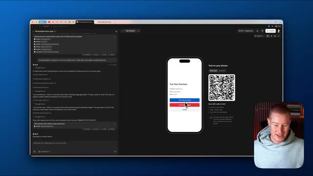
🔍 Agrandir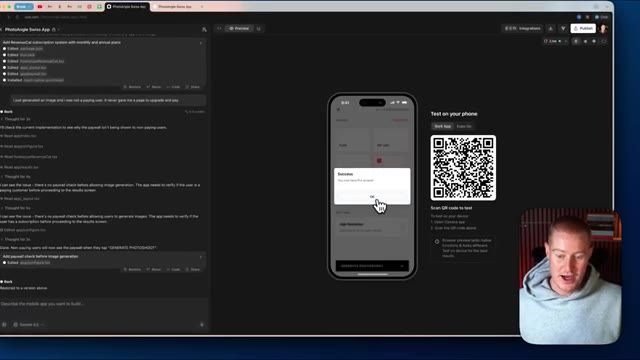
🔍 Agrandir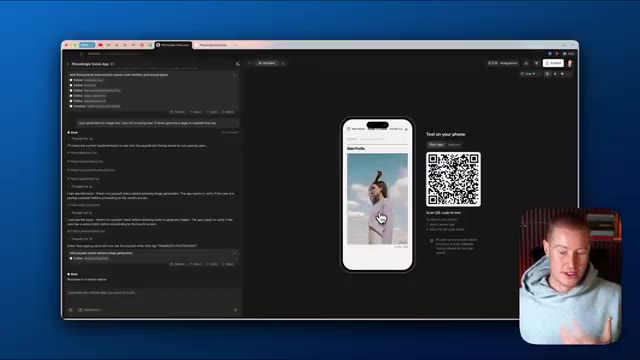
🔍 Agrandirvers RevenueCat. Et je veux juste m'assurer que cela s'affiche bien dans mon profil ici. Donc si je clique sur les données bac à sable, cela va nous montrer cet environnement bac à sable qui est essentiellement l'endroit où cette fausse transaction passe pour s'assurer que notre application fonctionne correctement et comme nous pouvons le voir, nous avons un abonnement actif, nous avons dix dollars de revenus récurrents mensuels, nous avons soixante dollars de revenus sur les 28 derniers jours parce que j'ai testé cela quelques fois pour m'assurer que ça fonctionne et nous pourrions effectivement cliquer là-dessus pour regarder les abonnements actifs et toutes ces informations avec tous nos utilisateurs et le montant des revenus que nous avons, que ce soit l'ARR, le MRR, tout ça, vont
Interface & Outils : Navigateur web affichant la plateforme de gestion d'achats in-app RevenueCat.
Contenu textuel & Code : Tableaux de bord de gestion d'applications, métriques financières (MRR, abonnements actifs, revenus), graphiques d'analyse d'abonnements. [DESC_IMAGE_2] Navigation dans les menus analytiques et présentation des graphiques de suivi des abonnements actifs.
Action / Démonstration : Explications face caméra et analyse conceptuelle des marchés.
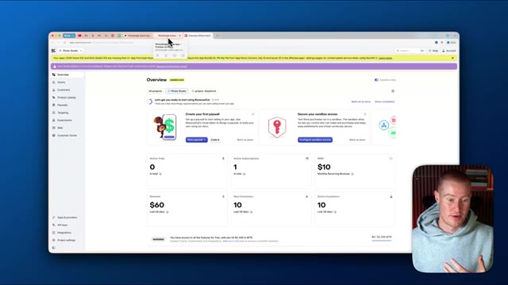
🔍 Agrandir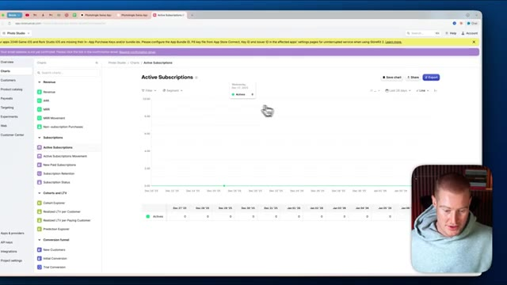
🔍 Agrandirêtre directement dans la limite des revenus pour que nous puissions réellement l'examiner pour notre application. Ensuite, ce que nous pourrions faire puisque notre application fonctionne désormais correctement avec toutes ses fonctionnalités, nous pourrions maintenant publier notre application. Nous pourrions donc soit la publier et y accéder via une URL. Donc si vous voulez voir à quoi cela ressemble, ce sera comme ceci. Elle a même généré cette image pour nous, séance photo virtuelle. Nous pourrions la scanner sur notre téléphone et commencer réellement à utiliser notre application directement sur notre téléphone. Ou ce que nous pourrions faire, c'est même publier directement sur l'App Store à l'intérieur de Rourke, ce qui est l'une des fonctionnalités qui rend cette plateforme si précieuse.
Interface & Outils : Navigateur web, interface de développement d'application (Rork / environnement de test).
Contenu textuel & Code : QR code de test, aperçu d'application mobile, logs de génération de code et de vérification d'abonnement.
Action / Démonstration : Navigation et présentation de l'application prête à être testée ou publiée.
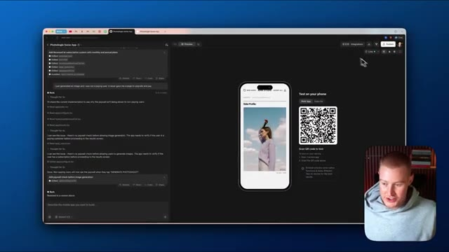
🔍 AgrandirDonc si vous voulez que je montre comment publier réellement vos applications Rourke sur l'App Store pour les applications mobiles, alors assurez-vous de commenter dans la section des commentaires ci-dessous et de me faire savoir que vous voulez cela et peut-être que je pourrais faire une vidéo là-dessus. Mais je vais juste cliquer sur publier et maintenant nous pouvons aller de l'avant et utiliser notre application. Très bien, les gars, voilà. Nous avons construit une application en utilisant l'intelligence artificielle avec Rourke et avons même ajouté des paiements à nos applications.
Interface & Outils : Interface de développement d'application web/mobile avec panneau d'aperçu, QR code de test et options de publication (App Store, Google Play).
Contenu textuel & Code : Journal de l'assistant IA (« Add RevenueCat subscription system »), code configuré, et options de publication (« photoangle-swiss-app mini app »).
Action / Démonstration : Navigation et présentation de l'interface de publication d'une application mobile sur l'App Store.
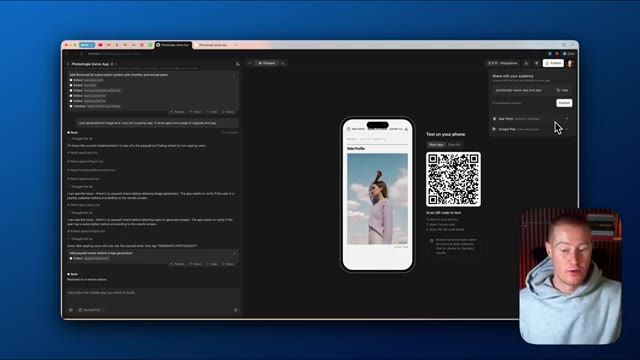
🔍 AgrandirSi vous avez tiré un peu de valeur de cette vidéo, laissez un pouce bleu. Dites-moi ce que vous en pensez dans les commentaires. Abonnez-vous à cette chaîne pour plus de contenu de ce genre. Cela étant dit, les gars, j'espère que vous passez une bonne journée et je vous vois dans la prochaine vidéo. Donc
Interface & Outils : YouTube
Contenu textuel & Code : Aucun graphique, code ou interface technique pertinente (simple conclusion de vidéo).
Action / Démonstration : Conclusion de la vidéo et appel à l'action pour s'abonner.